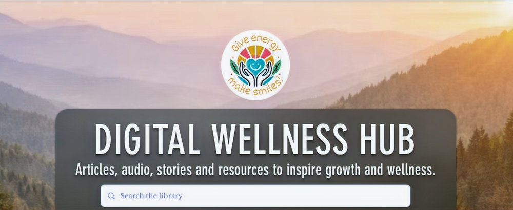

Ready to grow with intention? Grow with intention.
Learn how your emotions can become your greatest guide.
Articles, audio, stories and resources to inspire growth and wellness.

Choose Your Path
Four guided collections of articles and resources, organized around the areas of life you want to grow.

Productivity & Habit Mastery
Productivity & Habit Mastery is about creating the routines, structure and follow-through needed to make progress in everyday life. Explore resources
Self Care & Mindfulness
Self Care & Mindfulness helps you return to yourself in a world that often pulls you in every direction. Discover practices that encourage stillness,
Goal Achievement & Life Design
Designing your life starts with knowing what matters to you and building toward it with intention. This section helps you clarify your goals, shape yo
Emotional Wellness
Evidence based strategies and resources for understanding, managing and improving emotional health.


Goal Achievement & Life Design
Tools, mindsets and systems to help you set big goals, stay consistent and intentionally design the life you want.

Productivity & Habit Mastery
Proven strategies, tools and daily systems to build lasting habits, boost efficiency and achieve your most important goals.


Self Care & Mindfulness
Practical strategies and mindful practices to help you restore balance, reduce stress and support long term mental well being.
Not Sure Where to Begin? Start Here.
These companion articles expand on the lessons found in the book, guiding you step by step with deeper clarity, reflection and direction. Each resource is connected to a QR code within the book, making it easy to continue your journey beyond the page.

About The Digital Wellness Hub
The Digital Wellness Hub is a growing collection of educational resources focused on mental wellness, emotional awareness and personal development. The hub brings together articles, tools and guided materials designed to help individuals explore practical strategies that support everyday wellbeing.
Content within the hub draws from established concepts in psychology, wellness research and real world experience in mental health education and personal growth. Resources are organized for clear navigation and ongoing learning so visitors can easily explore topics and return as their interests or events evolve.
The purpose of the Digital Wellness Hub is to make thoughtful ideas and practical strategies easier to understand and apply in daily life. Visitors may use the hub to learn about emotional patterns, build resilience, develop healthier habits and explore personal growth topics at their own pace.